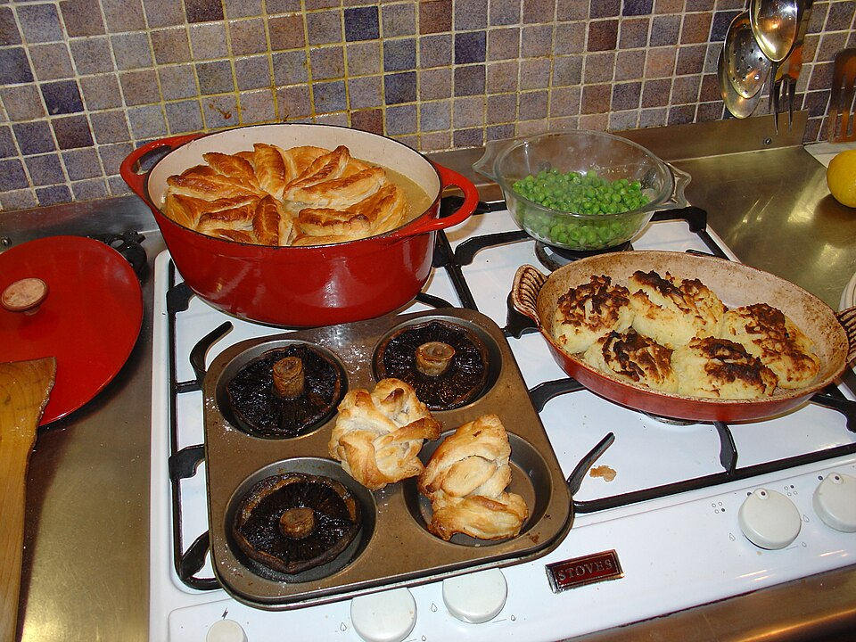

Tortas salgadas
Torta maravilha de frango e presunto

Ingredientes
- Massa: 2 xícaras (chá) de farinha, ½ xícara (chá) de manteiga, 1 ovo, 1 colher (chá) de sal, 1 colher (café) de fermento
- Recheio: 2 colheres (sopa) de azeite, 1 cebola roxa, 1 dente de alho, 500 g de peito de frango em cubos, 80 g de presunto em cubos, sal, pimenta, 1 colher (sopa) de conhaque, 150 ml de creme de leite fresco, 2 ovos batidos, 40 g de queijo ralado, salsa, 1 gema para pincelar
Modo de preparo
- Misture a massa; descanse 15 min. Forre forma 22 cm desmontável.
- Refogue cebola, alho, frango e presunto; flambé com conhaque; junte creme 5 min. Esfrie um pouco; junte ovos, queijo e salsa.
- Recheie, cubra com massa, pincele gema e asse a 180 °C por 50 minutos.
Observação
Presunto pode ser trocado por peito de peru.